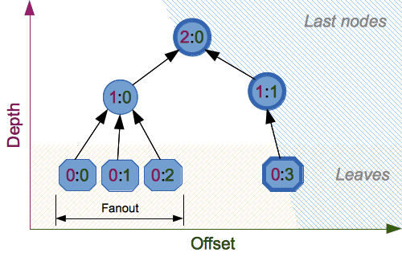

hashlib — Resumos de mensagens e hashes seguros¶
Código-fonte: Lib/hashlib.py
Este módulo implementa uma interface comum para diversos algoritmos de hash. Estão incluídos os algoritmos de hash seguros FIPS SHA224, SHA256, SHA384 e SHA512 (definidos no padrão FIPS 180-4), a série SHA-3 (definida no padrão FIPS 202), bem como os algoritmos legados SHA1 (anteriormente parte do FIPS) e o algoritmo MD5 (definido em internet RFC 1321).
Nota
Se você quiser as funções de hash adler32 ou crc32, elas estão disponíveis no módulo zlib.
Algoritmos de hash¶
Há um método construtor nomeado para cada tipo de hash. Todos retornam um objeto hash com a mesma interface simples. Por exemplo: use sha256() para criar um objeto hash SHA-256. Agora você pode alimentar este objeto com objetos bytes ou similares (normalmente bytes) usando o método update. A qualquer momento, você pode solicitar o digest da concatenação dos dados alimentados até o momento usando os métodos digest() ou hexdigest().
Para permitir multithreading, a GIL do Python é liberada ao calcular um hash fornecido com mais de 2047 bytes de dados de uma só vez em seu construtor ou método .update.
Constructors for hash algorithms that are always present in this module are
md5(), sha1(), sha224(), sha256(), sha384(),
sha512(), sha3_224(), sha3_256(), sha3_384(),
sha3_512(), shake_128(), shake_256(), blake2b(), and
blake2s(). These correspond to algorithms_guaranteed.
Any of these may nonetheless be missing or blocked in unusual environments,
such as a rare “FIPS compliant” build of Python or when OpenSSL’s “FIPS mode”
is configured to exclude some algorithms from its default provider. Calling
the constructor of an algorithm that is unavailable raises ValueError.
Additional algorithms may also be available if your Python distribution’s
hashlib was linked against a build of OpenSSL that provides others.
Others are not guaranteed available on all installations and will only be
accessible by name via new(). See algorithms_available.
Aviso
Alguns algoritmos apresentam vulnerabilidades conhecidas em colisões de hash (incluindo MD5 e SHA1). Consulte Ataques a algoritmos de hash criptográficos e a seção hashlib-seealso no final deste documento.
Adicionado na versão 3.6: Os construtores SHA3 (Keccak) e SHAKE sha3_224(), sha3_256(), sha3_384(), sha3_512(), shake_128(), shake_256() foram adicionados. blake2b() e blake2s() foram adicionados.
Alterado na versão 3.9: Todos os construtores de hashlib aceitam um argumento somente-nomeado usedforsecurity com o valor padrão True. Um valor falso permite o uso de algoritmos de hash inseguros e bloqueados em ambientes restritos. False indica que o algoritmo de hash não é usado em um contexto de segurança, por exemplo, como uma função de compressão unidirecional não criptográfica.
Alterado na versão 3.9: O hashlib agora usa SHA3 e SHAKE do OpenSSL, se ele os fornecer.
Alterado na versão 3.12: Para qualquer um dos algoritmos MD5, SHA1, SHA2 ou SHA3 que o OpenSSL vinculado não fornece, recorremos a uma implementação verificada do projeto HACL*.
Descontinuado desde a versão 3.15, será removido na versão 3.19: The undocumented string keyword parameter in _hashlib.new()
and hash-named constructors such as _md5.md5() is deprecated.
Prefer passing the initial data as a positional argument for maximum
backwards compatibility.
Uso¶
Para obter o resumo da string de bytes b"Nobody inspects the spammish repetition":
>>> import hashlib
>>> m = hashlib.sha256()
>>> m.update(b"Nobody inspects")
>>> m.update(b" the spammish repetition")
>>> m.digest()
b'\x03\x1e\xdd}Ae\x15\x93\xc5\xfe\\\x00o\xa5u+7\xfd\xdf\xf7\xbcN\x84:\xa6\xaf\x0c\x95\x0fK\x94\x06'
>>> m.hexdigest()
'031edd7d41651593c5fe5c006fa5752b37fddff7bc4e843aa6af0c950f4b9406'
Mais condensado:
>>> hashlib.sha256(b"Nobody inspects the spammish repetition").hexdigest()
'031edd7d41651593c5fe5c006fa5752b37fddff7bc4e843aa6af0c950f4b9406'
Construtores¶
- hashlib.new(name, [data, ]*, usedforsecurity=True)¶
É um construtor genérico que recebe a string name do algoritmo desejado como seu primeiro parâmetro. Ele também existe para permitir acesso aos hashes listados acima, bem como a quaisquer outros algoritmos que sua biblioteca OpenSSL possa oferecer.
Usando new() com um nome de algoritmo:
>>> h = hashlib.new('sha256')
>>> h.update(b"Nobody inspects the spammish repetition")
>>> h.hexdigest()
'031edd7d41651593c5fe5c006fa5752b37fddff7bc4e843aa6af0c950f4b9406'
- hashlib.md5([data, ]*, usedforsecurity=True)¶
- hashlib.sha1([data, ]*, usedforsecurity=True)¶
- hashlib.sha224([data, ]*, usedforsecurity=True)¶
- hashlib.sha256([data, ]*, usedforsecurity=True)¶
- hashlib.sha384([data, ]*, usedforsecurity=True)¶
- hashlib.sha512([data, ]*, usedforsecurity=True)¶
- hashlib.sha3_224([data, ]*, usedforsecurity=True)¶
- hashlib.sha3_256([data, ]*, usedforsecurity=True)¶
- hashlib.sha3_384([data, ]*, usedforsecurity=True)¶
- hashlib.sha3_512([data, ]*, usedforsecurity=True)¶
Construtores nomeados como esses são mais rápidos do que passar um nome de algoritmo para new().
Atributos¶
O hashlib fornece os seguintes atributos de módulo constantes:
- hashlib.algorithms_guaranteed¶
Um conjunto contendo os nomes dos algoritmos de hash com suporte garantido por este módulo em todas as plataformas. Observe que “md5” está nesta lista, apesar de alguns fornecedores originais oferecerem uma estranha construção Python “compatível com FIPS” que o exclui.
Adicionado na versão 3.2.
- hashlib.algorithms_available¶
Um conjunto contendo os nomes dos algoritmos de hash disponíveis no interpretador Python em execução. Esses nomes serão reconhecidos quando passados para
new().algorithms_guaranteedsempre será um subconjunto. O mesmo algoritmo pode aparecer várias vezes neste conjunto com nomes diferentes (graças ao OpenSSL).Adicionado na versão 3.2.
Objetos hash¶
Os seguintes valores são fornecidos como atributos constantes dos objetos hash retornados pelos construtores:
- hash.digest_size¶
O tamanho do hash resultante em bytes.
- hash.block_size¶
O tamanho do bloco interno do algoritmo de hash em bytes.
Um objeto hash tem os seguintes atributos:
- hash.name¶
O nome canônico deste hash, sempre em minúsculas e sempre adequado como parâmetro para
new()para criar outro hash deste tipo.Alterado na versão 3.4: O atributo name está presente no CPython desde o seu início, mas até o Python 3.4 não era especificado formalmente, então pode não existir em algumas plataformas.
Um objeto hash tem os seguintes métodos:
- hash.update(data)¶
Atualiza o objeto hash com o objeto bytes ou similar. Chamadas repetidas são equivalentes a uma única chamada com a concatenação de todos os argumentos:
m.update(a); m.update(b)é equivalente am.update(a+b).
- hash.digest()¶
Retorna o resumo dos dados passados ao método
update()até o momento. Este é um objeto bytes de tamanhodigest_sizeque pode conter bytes em todo o intervalo de 0 a 255.
- hash.hexdigest()¶
Similar a
digest(), exceto que o resumo é retornado como um objeto string de comprimento duplo, contendo apenas dígitos hexadecimais. Isso pode ser usado para trocar o valor com segurança em e-mails ou outros ambientes não binários.
- hash.copy()¶
Retorna uma cópia (“clone”) do objeto hash. Isso pode ser usado para calcular com eficiência os resumos de dados que compartilham uma substring inicial comum.
Resumos de comprimento variável de SHAKE¶
- hashlib.shake_128([data, ]*, usedforsecurity=True)¶
- hashlib.shake_256([data, ]*, usedforsecurity=True)¶
Os algoritmos shake_128() e shake_256() fornecem resumos de comprimento variável com length_in_bits//2 de até 128 ou 256 bits de segurança. Portanto, seus métodos de resumo exigem um comprimento. O comprimento máximo não é limitado pelo algoritmo SHAKE.
- shake.digest(length)¶
Retorna o resumo dos dados passados ao método
update()até o momento. Este é um objeto bytes de tamanho length que pode conter bytes em todo o intervalo de 0 a 255.
- shake.hexdigest(length)¶
Similar a
digest(), exceto que o resumo é retornado como um objeto string de comprimento duplo, contendo apenas dígitos hexadecimais. Isso pode ser usado para trocar o valor em e-mails ou outros ambientes não binários.
Exemplo de uso:
>>> h = hashlib.shake_256(b'Nobody inspects the spammish repetition')
>>> h.hexdigest(20)
'44709d6fcb83d92a76dcb0b668c98e1b1d3dafe7'
Hash de arquivo¶
O módulo hashlib fornece uma função auxiliar para hash eficiente de um objeto arquivo ou similar.
- hashlib.file_digest(fileobj, digest, /)¶
Retorna um objeto resumo que foi atualizado com o conteúdo do objeto arquivo.
fileobj deve ser um objeto arquivo ou similar aberto para leitura em modo binário. Ele aceita objetos arquivo da
open()embutida, instâncias deBytesIO, objetos SocketIO desocket.socket.makefile()e similares. fileobj deve ser aberto em modo bloqueante, caso contrário, uma exceçãoBlockingIOErrorpode ser levantada.A função pode ignorar a E/S do Python e usar o descritor de arquivo de
fileno()diretamente. fileobj deve ser presumido como sendo um estado desconhecido após o retorno ou o levantamento desta função. Cabe a quem a chamou fechar fileobj.digest deve ser um nome de algoritmo de hash como str, um construtor de hash ou um chamável que retorna um objeto de hash.
Exemplo:
>>> import io, hashlib, hmac >>> with open("library/hashlib.rst", "rb") as f: ... digest = hashlib.file_digest(f, "sha256") ... >>> digest.hexdigest() '...'
>>> buf = io.BytesIO(b"somedata") >>> mac1 = hmac.HMAC(b"key", digestmod=hashlib.sha512) >>> digest = hashlib.file_digest(buf, lambda: mac1)
>>> digest is mac1 True >>> mac2 = hmac.HMAC(b"key", b"somedata", digestmod=hashlib.sha512) >>> mac1.digest() == mac2.digest() True
Adicionado na versão 3.11.
Alterado na versão 3.14: Agora levanta uma
BlockingIOErrorse o arquivo for aberto em modo não-bloqueante. Anteriormente, bytes nulos espúrios eram adicionados ao resumo.
Derivação de chave¶
Algoritmos de alongamento de chave e derivação de chave são projetados para criar hashes de senhas seguros. Algoritmos ingênuos como sha1(password) não são resistentes a ataques de força bruta. Uma boa função de hashing de senhas deve ser ajustável, lenta e incluir um salt.
- hashlib.pbkdf2_hmac(hash_name, password, salt, iterations, dklen=None)¶
A função fornece a função 2 de derivação de chave baseada em senha PKCS#5. Ela usa HMAC como função pseudoaleatória.
A string hash_name é o nome desejado do algoritmo de resumo de hash para HMAC, por exemplo, ‘sha1’ ou ‘sha256’. password e salt são interpretados como buffers de bytes. Aplicações e bibliotecas devem limitar password a um comprimento razoável (por exemplo, 1024). salt deve ter cerca de 16 bytes ou mais de uma fonte adequada, por exemplo,
os.urandom().O número de iterations deve ser escolhido com base no algoritmo de hash e no poder computacional. A partir de 2022, centenas de milhares de iterações do SHA-256 são sugeridas. Para entender por que e como escolher o que é melhor para sua aplicação, leia o Appendix A.2.2 do NIST-SP-800-132. As respostas à pergunta sobre iterações de pbkdf2 no StackExchange explicam em detalhes.
dklen é o comprimento da chave derivada em bytes. Se dklen for
None, o tamanho do resumo do algoritmo de hash hash_name será usado, por exemplo, 64 para SHA-512.>>> from hashlib import pbkdf2_hmac >>> our_app_iters = 500_000 # Application specific, read above. >>> dk = pbkdf2_hmac('sha256', b'password', b'bad salt' * 2, our_app_iters) >>> dk.hex() '15530bba69924174860db778f2c6f8104d3aaf9d26241840c8c4a641c8d000a9'
Função disponível somente quando Python é compilado com OpenSSL.
Adicionado na versão 3.4.
Alterado na versão 3.12: Função agora disponível apenas quando o Python é criado com OpenSSL. A implementação lenta do Python puro foi removida.
- hashlib.scrypt(password, *, salt, n, r, p, maxmem=0, dklen=64)¶
A função fornece a função de derivação de chave baseada em senha scrypt, conforme definido em RFC 7914.
password e salt devem ser objetos bytes ou similares. Aplicações e bibliotecas devem limitar password a um tamanho razoável (por exemplo, 1024). salt deve ter cerca de 16 bytes ou mais de uma fonte adequada, por exemplo,
os.urandom().n é o fator de custo de CPU/memória, r o tamanho do bloco, p o fator de paralelismo e maxmem limita a memória (o padrão do OpenSSL 1.1.0 é 32 MiB). dklen é o comprimento da chave derivada em bytes.
Adicionado na versão 3.6.
BLAKE2¶
BLAKE2 é uma função hash criptográfica definida em RFC 7693 que vem em dois sabores:
BLAKE2b, otimizado para plataformas de 64 bits e produz resumos de qualquer tamanho entre 1 e 64 bytes,
BLAKE2s, otimizado para plataformas de 8 a 32 bits e produz resumos de qualquer tamanho entre 1 e 32 bytes.
BLAKE2 supports keyed mode (a faster and simpler replacement for HMAC), salted hashing, personalization, and tree hashing.
Hash objects from this module follow the API of standard library’s
hashlib objects.
Criando objetos hash¶
Novos objetos hash são criados chamando funções construtoras:
- hashlib.blake2b(data=b'', *, digest_size=64, key=b'', salt=b'', person=b'', fanout=1, depth=1, leaf_size=0, node_offset=0, node_depth=0, inner_size=0, last_node=False, usedforsecurity=True)¶
- hashlib.blake2s(data=b'', *, digest_size=32, key=b'', salt=b'', person=b'', fanout=1, depth=1, leaf_size=0, node_offset=0, node_depth=0, inner_size=0, last_node=False, usedforsecurity=True)¶
Essas funções retornam os objetos hash correspondentes para calcular BLAKE2b ou BLAKE2s. Opcionalmente, elas aceitam estes parâmetros gerais:
data: pedaço inicial de dados para hash, que deve ser objeto bytes ou similar. Pode ser passado apenas como argumento posicional.
digest_size: tamanho do resumo de saída em bytes.
key: chave para hash com chave (até 64 bytes para BLAKE2b, até 32 bytes para BLAKE2s).
salt: sal para hash aleatório (até 16 bytes para BLAKE2b, até 8 bytes para BLAKE2s).
person: string de personalização (até 16 bytes para BLAKE2b, até 8 bytes para BLAKE2s).
A tabela a seguir mostra os limites para parâmetros gerais (em bytes):
Hash |
digest_size |
len(key) |
len(salt) |
len(person) |
|---|---|---|---|---|
BLAKE2b |
64 |
64 |
16 |
16 |
BLAKE2s |
32 |
32 |
8 |
8 |
Nota
BLAKE2 specification defines constant lengths for salt and personalization
parameters, however, for convenience, this implementation accepts byte
strings of any size up to the specified length. If the length of the
parameter is less than specified, it is padded with zeros, thus, for
example, b'salt' and b'salt\x00' is the same value. (This is not
the case for key.)
These sizes are available as module constants described below.
Constructor functions also accept the following tree hashing parameters:
fanout: fanout (0 to 255, 0 if unlimited, 1 in sequential mode).
depth: maximal depth of tree (1 to 255, 255 if unlimited, 1 in sequential mode).
leaf_size: maximal byte length of leaf (0 to
2**32-1, 0 if unlimited or in sequential mode).node_offset: node offset (0 to
2**64-1for BLAKE2b, 0 to2**48-1for BLAKE2s, 0 for the first, leftmost, leaf, or in sequential mode).node_depth: node depth (0 to 255, 0 for leaves, or in sequential mode).
inner_size: inner digest size (0 to 64 for BLAKE2b, 0 to 32 for BLAKE2s, 0 in sequential mode).
last_node: boolean indicating whether the processed node is the last one (
Falsefor sequential mode).

See section 2.10 in BLAKE2 specification for comprehensive review of tree hashing.
Constantes¶
- blake2b.SALT_SIZE¶
- blake2s.SALT_SIZE¶
Salt length (maximum length accepted by constructors).
- blake2b.PERSON_SIZE¶
- blake2s.PERSON_SIZE¶
Personalization string length (maximum length accepted by constructors).
- blake2b.MAX_KEY_SIZE¶
- blake2s.MAX_KEY_SIZE¶
Maximum key size.
- blake2b.MAX_DIGEST_SIZE¶
- blake2s.MAX_DIGEST_SIZE¶
Maximum digest size that the hash function can output.
Exemplos¶
Simple hashing¶
To calculate hash of some data, you should first construct a hash object by
calling the appropriate constructor function (blake2b() or
blake2s()), then update it with the data by calling update() on the
object, and, finally, get the digest out of the object by calling
digest() (or hexdigest() for hex-encoded string).
>>> from hashlib import blake2b
>>> h = blake2b()
>>> h.update(b'Hello world')
>>> h.hexdigest()
'6ff843ba685842aa82031d3f53c48b66326df7639a63d128974c5c14f31a0f33343a8c65551134ed1ae0f2b0dd2bb495dc81039e3eeb0aa1bb0388bbeac29183'
As a shortcut, you can pass the first chunk of data to update directly to the constructor as the positional argument:
>>> from hashlib import blake2b
>>> blake2b(b'Hello world').hexdigest()
'6ff843ba685842aa82031d3f53c48b66326df7639a63d128974c5c14f31a0f33343a8c65551134ed1ae0f2b0dd2bb495dc81039e3eeb0aa1bb0388bbeac29183'
You can call hash.update() as many times as you need to iteratively
update the hash:
>>> from hashlib import blake2b
>>> items = [b'Hello', b' ', b'world']
>>> h = blake2b()
>>> for item in items:
... h.update(item)
...
>>> h.hexdigest()
'6ff843ba685842aa82031d3f53c48b66326df7639a63d128974c5c14f31a0f33343a8c65551134ed1ae0f2b0dd2bb495dc81039e3eeb0aa1bb0388bbeac29183'
Using different digest sizes¶
BLAKE2 has configurable size of digests up to 64 bytes for BLAKE2b and up to 32 bytes for BLAKE2s. For example, to replace SHA-1 with BLAKE2b without changing the size of output, we can tell BLAKE2b to produce 20-byte digests:
>>> from hashlib import blake2b
>>> h = blake2b(digest_size=20)
>>> h.update(b'Replacing SHA1 with the more secure function')
>>> h.hexdigest()
'd24f26cf8de66472d58d4e1b1774b4c9158b1f4c'
>>> h.digest_size
20
>>> len(h.digest())
20
Hash objects with different digest sizes have completely different outputs (shorter hashes are not prefixes of longer hashes); BLAKE2b and BLAKE2s produce different outputs even if the output length is the same:
>>> from hashlib import blake2b, blake2s
>>> blake2b(digest_size=10).hexdigest()
'6fa1d8fcfd719046d762'
>>> blake2b(digest_size=11).hexdigest()
'eb6ec15daf9546254f0809'
>>> blake2s(digest_size=10).hexdigest()
'1bf21a98c78a1c376ae9'
>>> blake2s(digest_size=11).hexdigest()
'567004bf96e4a25773ebf4'
Keyed hashing¶
Keyed hashing can be used for authentication as a faster and simpler replacement for Hash-based message authentication code (HMAC). BLAKE2 can be securely used in prefix-MAC mode thanks to the indifferentiability property inherited from BLAKE.
This example shows how to get a (hex-encoded) 128-bit authentication code for
message b'message data' with key b'pseudorandom key':
>>> from hashlib import blake2b
>>> h = blake2b(key=b'pseudorandom key', digest_size=16)
>>> h.update(b'message data')
>>> h.hexdigest()
'3d363ff7401e02026f4a4687d4863ced'
As a practical example, a web application can symmetrically sign cookies sent to users and later verify them to make sure they weren’t tampered with:
>>> from hashlib import blake2b
>>> from hmac import compare_digest
>>>
>>> SECRET_KEY = b'pseudorandomly generated server secret key'
>>> AUTH_SIZE = 16
>>>
>>> def sign(cookie):
... h = blake2b(digest_size=AUTH_SIZE, key=SECRET_KEY)
... h.update(cookie)
... return h.hexdigest().encode('utf-8')
>>>
>>> def verify(cookie, sig):
... good_sig = sign(cookie)
... return compare_digest(good_sig, sig)
>>>
>>> cookie = b'user-alice'
>>> sig = sign(cookie)
>>> print("{0},{1}".format(cookie.decode('utf-8'), sig))
user-alice,b'43b3c982cf697e0c5ab22172d1ca7421'
>>> verify(cookie, sig)
True
>>> verify(b'user-bob', sig)
False
>>> verify(cookie, b'0102030405060708090a0b0c0d0e0f00')
False
Even though there’s a native keyed hashing mode, BLAKE2 can, of course, be used
in HMAC construction with hmac module:
>>> import hmac, hashlib
>>> m = hmac.new(b'secret key', digestmod=hashlib.blake2s)
>>> m.update(b'message')
>>> m.hexdigest()
'e3c8102868d28b5ff85fc35dda07329970d1a01e273c37481326fe0c861c8142'
Randomized hashing¶
By setting salt parameter users can introduce randomization to the hash function. Randomized hashing is useful for protecting against collision attacks on the hash function used in digital signatures.
Randomized hashing is designed for situations where one party, the message preparer, generates all or part of a message to be signed by a second party, the message signer. If the message preparer is able to find cryptographic hash function collisions (i.e., two messages producing the same hash value), then they might prepare meaningful versions of the message that would produce the same hash value and digital signature, but with different results (e.g., transferring $1,000,000 to an account, rather than $10). Cryptographic hash functions have been designed with collision resistance as a major goal, but the current concentration on attacking cryptographic hash functions may result in a given cryptographic hash function providing less collision resistance than expected. Randomized hashing offers the signer additional protection by reducing the likelihood that a preparer can generate two or more messages that ultimately yield the same hash value during the digital signature generation process — even if it is practical to find collisions for the hash function. However, the use of randomized hashing may reduce the amount of security provided by a digital signature when all portions of the message are prepared by the signer.
(NIST SP-800-106 “Randomized Hashing for Digital Signatures”)
In BLAKE2 the salt is processed as a one-time input to the hash function during initialization, rather than as an input to each compression function.
Aviso
Salted hashing (or just hashing) with BLAKE2 or any other general-purpose cryptographic hash function, such as SHA-256, is not suitable for hashing passwords. See BLAKE2 FAQ for more information.
>>> import os
>>> from hashlib import blake2b
>>> msg = b'some message'
>>> # Calculate the first hash with a random salt.
>>> salt1 = os.urandom(blake2b.SALT_SIZE)
>>> h1 = blake2b(salt=salt1)
>>> h1.update(msg)
>>> # Calculate the second hash with a different random salt.
>>> salt2 = os.urandom(blake2b.SALT_SIZE)
>>> h2 = blake2b(salt=salt2)
>>> h2.update(msg)
>>> # The digests are different.
>>> h1.digest() != h2.digest()
True
Personalization¶
Sometimes it is useful to force hash function to produce different digests for the same input for different purposes. Quoting the authors of the Skein hash function:
We recommend that all application designers seriously consider doing this; we have seen many protocols where a hash that is computed in one part of the protocol can be used in an entirely different part because two hash computations were done on similar or related data, and the attacker can force the application to make the hash inputs the same. Personalizing each hash function used in the protocol summarily stops this type of attack.
(The Skein Hash Function Family, p. 21)
BLAKE2 can be personalized by passing bytes to the person argument:
>>> from hashlib import blake2b
>>> FILES_HASH_PERSON = b'MyApp Files Hash'
>>> BLOCK_HASH_PERSON = b'MyApp Block Hash'
>>> h = blake2b(digest_size=32, person=FILES_HASH_PERSON)
>>> h.update(b'the same content')
>>> h.hexdigest()
'20d9cd024d4fb086aae819a1432dd2466de12947831b75c5a30cf2676095d3b4'
>>> h = blake2b(digest_size=32, person=BLOCK_HASH_PERSON)
>>> h.update(b'the same content')
>>> h.hexdigest()
'cf68fb5761b9c44e7878bfb2c4c9aea52264a80b75005e65619778de59f383a3'
Personalization together with the keyed mode can also be used to derive different keys from a single one.
>>> from hashlib import blake2s
>>> from base64 import b64decode, b64encode
>>> orig_key = b64decode(b'Rm5EPJai72qcK3RGBpW3vPNfZy5OZothY+kHY6h21KM=')
>>> enc_key = blake2s(key=orig_key, person=b'kEncrypt').digest()
>>> mac_key = blake2s(key=orig_key, person=b'kMAC').digest()
>>> print(b64encode(enc_key).decode('utf-8'))
rbPb15S/Z9t+agffno5wuhB77VbRi6F9Iv2qIxU7WHw=
>>> print(b64encode(mac_key).decode('utf-8'))
G9GtHFE1YluXY1zWPlYk1e/nWfu0WSEb0KRcjhDeP/o=
Modo árvore¶
Here’s an example of hashing a minimal tree with two leaf nodes:
10
/ \
00 01
This example uses 64-byte internal digests, and returns the 32-byte final digest:
>>> from hashlib import blake2b
>>>
>>> FANOUT = 2
>>> DEPTH = 2
>>> LEAF_SIZE = 4096
>>> INNER_SIZE = 64
>>>
>>> buf = bytearray(6000)
>>>
>>> # Left leaf
... h00 = blake2b(buf[0:LEAF_SIZE], fanout=FANOUT, depth=DEPTH,
... leaf_size=LEAF_SIZE, inner_size=INNER_SIZE,
... node_offset=0, node_depth=0, last_node=False)
>>> # Right leaf
... h01 = blake2b(buf[LEAF_SIZE:], fanout=FANOUT, depth=DEPTH,
... leaf_size=LEAF_SIZE, inner_size=INNER_SIZE,
... node_offset=1, node_depth=0, last_node=True)
>>> # Root node
... h10 = blake2b(digest_size=32, fanout=FANOUT, depth=DEPTH,
... leaf_size=LEAF_SIZE, inner_size=INNER_SIZE,
... node_offset=0, node_depth=1, last_node=True)
>>> h10.update(h00.digest())
>>> h10.update(h01.digest())
>>> h10.hexdigest()
'3ad2a9b37c6070e374c7a8c508fe20ca86b6ed54e286e93a0318e95e881db5aa'
Credits¶
BLAKE2 was designed by Jean-Philippe Aumasson, Samuel Neves, Zooko Wilcox-O’Hearn, and Christian Winnerlein based on SHA-3 finalist BLAKE created by Jean-Philippe Aumasson, Luca Henzen, Willi Meier, and Raphael C.-W. Phan.
It uses core algorithm from ChaCha cipher designed by Daniel J. Bernstein.
The stdlib implementation is based on pyblake2 module. It was written by Dmitry Chestnykh based on C implementation written by Samuel Neves. The documentation was copied from pyblake2 and written by Dmitry Chestnykh.
The C code was partly rewritten for Python by Christian Heimes.
The following public domain dedication applies for both C hash function implementation, extension code, and this documentation:
To the extent possible under law, the author(s) have dedicated all copyright and related and neighboring rights to this software to the public domain worldwide. This software is distributed without any warranty.
You should have received a copy of the CC0 Public Domain Dedication along with this software. If not, see https://creativecommons.org/publicdomain/zero/1.0/.
The following people have helped with development or contributed their changes to the project and the public domain according to the Creative Commons Public Domain Dedication 1.0 Universal:
Alexandr Sokolovskiy
Ver também
- Module
hmac A module to generate message authentication codes using hashes.
- Módulo
base64 Another way to encode binary hashes for non-binary environments.
- https://nvlpubs.nist.gov/nistpubs/fips/nist.fips.180-4.pdf
The FIPS 180-4 publication on Secure Hash Algorithms.
- https://csrc.nist.gov/pubs/fips/202/final
The FIPS 202 publication on the SHA-3 Standard.
- https://www.blake2.net/
Official BLAKE2 website.
- https://en.wikipedia.org/wiki/Cryptographic_hash_function
Wikipedia article with information on which algorithms have known issues and what that means regarding their use.
- https://www.ietf.org/rfc/rfc8018.txt
PKCS #5: Password-Based Cryptography Specification Version 2.1
- https://nvlpubs.nist.gov/nistpubs/Legacy/SP/nistspecialpublication800-132.pdf
NIST Recommendation for Password-Based Key Derivation.